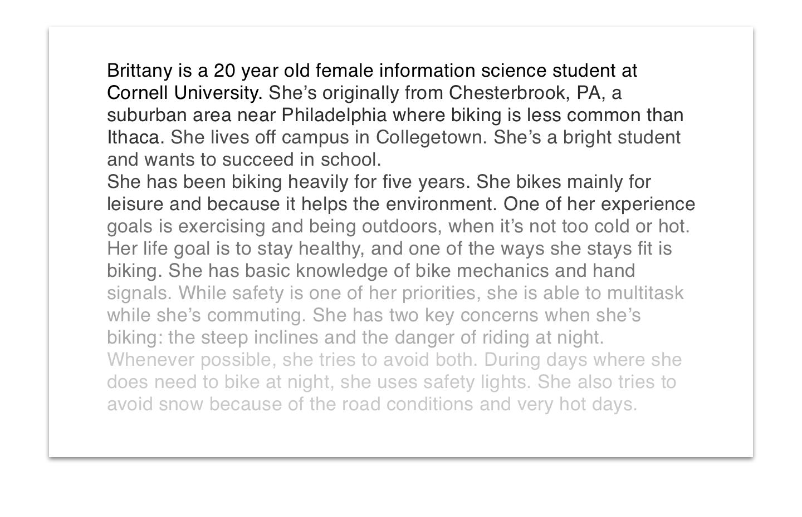

Designed mobile app for biking that would navigate students around campus
Conducted in-depth UX interviews with Cornell Students
Developed persona and set of requirements
Designed high fidelity mock up using Sketch
Software used: Balsamiq, Sketch
My Role
I was part of a team of 6 designers at Cornell University. We created a biking mobile application as part of Human Computer Interaction class. I was responsible for working on all aspects of the design process. I was interested in working on this project because as a driver, pedestrian, and cyclist in Ithaca, I've seen dangerous road conditions and knew there was potential to improve biking conditions in Ithaca. In this case study, I've highlighted areas where I was specifically responsible.
Goals
We started the project from scratch. We needed to understand the problems of our users, brainstorm ideas, and design low, medium, and high fidelity prototypes.
Discovery
Our main participants are bikers from the Ithaca and Cornell University community between the ages of 20-35. Four participants were Cornell students, one participant was a Cornell alumnus, and one participant was a Cornell staff member. Five participants were female and one was male. We conducted in depth interviews by asking questions about their biking habits around campus. We asked questions about their biking habits, safety precautions, and their motivations for biking. Some of the questions we asked were:
What measures do you currently take in terms of bike safety?
How often do you wear a helmet?
How often do you use hand signals when turning?
What do you usually do when you get to an intersection?
What was your last encounter with a car? [whether a serious accident or just cutting it a little too close]
Personas
After gathering interview responses, we developed an affinity diagram that took points from our interviewee's responses and separated them into different categories, like where they ride, why they ride, support they receive in accidents, and benefits from riding. Based on the diagram, we created a persona. I created a narrative and story about a students background and her life:

Requirements
After interviewing students, we created requirements for the application. The requirements were to:
Create a mobile accessible tool for bikers
Optimize the biker’s route by providing instructions to minimize the number of hills.
Provide warnings about road conditions.
Find friends to bike with at night.
Storyboarding
We developed storyboards that drew how a user may interact with our app. Below is my storyboard:
Heuristic Evaluation
After creating medium fidelity mockups, we did a heuristic evaluation where we found problems in the design. I created heuristic evaluations and developed solutions to incorporate into our high fidelity app.
Design
I designed the homepage, friends list, and importing contacts screen for the high fidelity mock ups. We incorporated them into InVision. I liked being able to part of the whole design process, from start to finish. It was a semester project, so next time, I would like to have more time to gather more user testing after we created the high fidelity prototype. I had a great team though, and everyone's enthusiasm and diligence throughout made this project really enjoyable.
Project Members: Laura Caruso, Aimee Slupski, Bing Weng, Sam Kitterman, Rachel Goffin